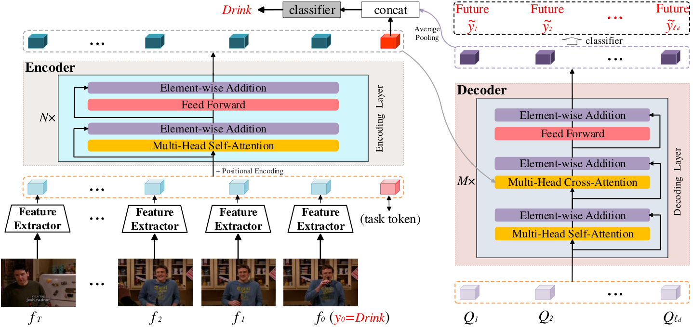

可直接借它的 task token 读出头与因果窗口编码器，做逐控制步的阶段分类；代价是固定窗口、闭集标签、无边界输出，且必须自己补一层“标签跳变→候选提交”的判决逻辑。
- 最小可复用件
- 位置编码 + task token 的历史窗口编码器，以及接在 task token 输出上的线性分类头
- 主要风险
- 输出只有逐帧类别、没有起止时间；把它当事件检测器会导致提交时刻完全由后处理阈值决定
- 复现门槛
- 预提取的 two-stream 帧级特征（3072 或 4096 维）、逐帧动作标注、单卡 V100 级训练；论文未报告参数量与显存占用
1. 核心摘要
在线动作检测（online action detection, OAD）要求在每个时间步只用当前与过去的观测判定当前动作类别，按逐帧 mAP 或 mcAP 评测。此前主流做法用 RNN 累积历史，串行计算与梯度消失使它难以覆盖较长窗口；也有方法直接对当前帧或固定池化特征分类，当前帧模糊、遮挡或人物背对镜头时就会判错。OadTR 把长度 T 的历史 frame chunk 特征序列送入 Transformer encoder 做全局 self-attention，并在序列尾部附加一个可学习 task token，用它的输出作为当前分类的读出；decoder 用若干预测 query 并行给出未来若干步的预测，训练时以未来标签监督。推理阶段只输入历史，未来信息仅以监督信号的形式存在。判定：它解决的是“现在处于哪个阶段”的语义确认，输出逐帧类别，不产生事件起止。
2. 事件流水线定位
它落在「语义确认」：给定已经流过的一段历史，判断当前时刻属于哪一类动作。上游假设特征提取器已经能提供每步的判别性表征，下游假设有人把连续的类别序列切成事件；本方法本身既不产出候选区间，也不判断事件何时结束。对「边界定位」只是部分相关：类别发生跳变的位置可以当作阶段切换的间接证据，但跳变点不等于标注边界，也没有置信区间。
| 环节 | 内容 |
|---|---|
| 输入 | 截至当前步的 T+1 个 frame chunk 特征（TSN-Anet 3072 维或 TSN-Kinetics 4096 维），另加一个可学习 task token |
| 输出 | 当前 frame chunk 在 C+1 类（含背景）上的 softmax 概率，每步一组 |
| 交给下游 | 逐帧类别序列（可附概率）；跳变时刻作为候选提交点，起止与时长需由上层规则或另一定位模块补齐 |
3. 问题与动机
OAD 的困难不在单帧识别，而在“当前观测不足以判定”的那些时刻：人正要拿起杯子时，画面与“喝水”“放下杯子”都相似；镜头切换、运动模糊、背身遮挡会让当前帧特征接近背景。这类样本只能靠几十步之前的状态消歧，因此历史编码的长度与质量直接决定正确率。RNN 方案在这种需求下有具体失效模式：隐状态逐步递推，窗口一长就出现梯度消失与近因偏置，较早的关键证据被后续帧稀释；训练也无法并行，长窗口的吞吐受限。作者在 Fig. 1 中报告训练与推理速度快于当时的 RNN 方法（具体数值未列表）。
另一类做法的问题在监督信号：只用当前帧分类，等于要求每帧自身可判别，遇到上面的模糊时刻必然出错；把历史简单池化，则把“哪一步更重要”交给平均，阶段内的静止片段会淹没切换前后的关键差异。离线时序动作检测方法（如基于 proposal 的两阶段框架）依赖完整视频与后处理，在线协议下不可用，因为它们需要看到实例结束才能定界。
4. 方法拆解

Figure 2：编码器读取历史特征与 task token，解码器生成未来预测 query；顶部分类头融合 task token 与池化预测特征。
4.1 输入与时间表征
输入不是切分好的动作片段，而是每个时间步一个 frame chunk 的 two-stream 特征：TSN-Anet 为 3072 维，TSN-Kinetics 为 4096 维，二者都由 ResNet-200 与 BN-Inception 双流网络离线提取。线性层把每步特征投影到 D 维，得到 token 序列；由于 self-attention 本身不带顺序，序列上再逐元素加位置编码（论文比较了正弦、固定与可学习三种，HDD 上可学习最好，Table 5d）。窗口长度 T 在 HDD 上取 31，在 TVSeries 与 THUMOS14 上取 63，即输入为 T+1 个历史 token 再加一个 task token，共 T+2 个位置。窗口随流式输入滑动，超出的旧帧直接丢弃，没有跨窗口记忆，也没有对历史做压缩或摘要。frame chunk 具体包含多少帧、特征按多少 fps 抽取，未在已核验的公开材料中确认。
4.2 关键机制
task token 的读入与作用。task token 是一个可学习的 D 维向量 token_class，与历史 token 拼在同一序列里（Fig. 2 中位于最右端的红色 token），因此它天然参与每一层多头自注意力：它不携带任何时刻的内容，只通过 attention 从历史 token 中读取与任务相关的信息。编码结束后取它对应的输出 m_token 作为分类表示，而不是取 \(f_{0}\) 位置的输出。作者用 Fig. 3 的相似度分布说明理由：没有 task token 时，分类特征与 \(f_{0}\) 输入特征的相似度最高，表示被最后一个位置主导；加入之后相似度分布被摊平，模型可以自行决定哪些历史步更重要。
未来预测分支。decoder 有 \(\ell _{d}\) 个可学习预测 query，每层并行解码，通过 cross-attention 读取 encoder 的输出，得到未来若干步的预测 \(\hat Q_i\)。这些输出经 softmax 后与未来动作标签算交叉熵，与当前分类损失联合优化：\(\mathcal{L}=\operatorname{CE}(p_0,y_0)+\lambda\sum_i\operatorname{CE}(\hat p_i,\hat y_i)\)，\(\lambda=0.5\)。摘要与正文把它描述为“预测未来 clip 表征”，但 Eq. 12–13 实际监督的是未来动作类别，本页以公式为准。
分类读出。decoder 的 \(\ell _{d}\) 个输出先做平均池化，再与 m_token 拼接，经全连接层与 softmax 得到当前类别：\(p_0= \operatorname{softmax}(\operatorname{Concat}[m_{\mathrm{token}}, \operatorname{AvgPool}(\hat Q)] W_c)\)。因此该分支在推理时仍会运行，其池化特征进入分类器，但输入侧始终只有历史。默认配置在多数数据集上为 \(N=3\)、\(M=5\)、\(\ell _{d}\)=8；THUMOS14 上 4 头、1024 维最优（Table 5e、5f、6、7）。
4.3 输出与在线边界
推理是因果的：第 t 步只读 \(f_{-T}\) 到 \(f_{0}\)，不使用任何未来帧，也不使用未来标签；未来只出现在训练损失里。单步流程为：抽取当前 frame chunk 特征 → 推入窗口并丢弃最旧一项 → 整个窗口加位置编码过 encoder → 取 task token 输出并与 decoder 池化预测拼接 → 线性层加 softmax → 输出当前类别。窗口每步整体重算，论文没有描述跨步缓存或增量注意力；输出平滑与提交阈值也未给出规则，属未在已核验的公开材料中确认。
因此它不能直接给出事件边界。输出是“每步属于哪一类”，一个动作实例在时间轴上表现为一段连续的同类标签；起止只能由标签变化间接推断，且这种推断会同时受类别抖动与窗口滞后影响：窗口长 T 步，阶段切换后旧上下文仍占多数，标签可能延迟若干步才翻转。把标签变化转成候选提交，至少需要三件事：连续 k 步同类才确认（抑制单帧抖动）、最小持续时长（过滤瞬时误检）、以窗口内该类概率的均值或最小值作为候选置信度。得到的是“候选区间 + 置信度”，仍需上层去重与合并。
5. 证据与实验
论文在 HDD（约 104 小时驾驶视频、11 类、137 段，100 段训练 / 37 段评测）、TVSeries（6 部剧集约 16 小时、30 类）与 THUMOS14（20 类，200 段验证集训练、213 段测试集评测）上验证。HDD 与 THUMOS14 报逐帧 mAP，TVSeries 报 mcAP；三种指标不可直接横向比较。下表数字均取自论文表格。
| 数据集 / 特征 | 指标 | OadTR | 对照 | 出处 |
|---|---|---|---|---|
| HDD | mAP | 29.8 | TRN 29.2 | Table 1 |
| TVSeries / TSN-Anet | mcAP | 85.4 | IDN 84.7 | Table 2 |
| TVSeries / TSN-Kinetics | mcAP | 87.2 | IDN 86.1 | Table 2 |
| THUMOS14 / TSN-Anet | mAP | 58.3 | IDN 50.0（+8.3） | Table 3 |
| THUMOS14 / TSN-Kinetics | mAP | 65.2 | IDN 60.3（+4.9） | Table 3 |
消融以“无 task token 的 encoder”为基线（Table 5a–c）：HDD 28.7 → 29.8，TVSeries 84.8 → 85.4，THUMOS14 55.8 → 58.3；单独加 task token 或单独加 decoder 都有增益，两者同用时最好，作者给出的相对基线提升为 1.1、0.6、2.5 个百分点。Table 7 显示编码/解码层数在多数情况下 \(N=3\)、\(M=5\) 最优，但 TVSeries 有波动（\(N=2\) 时 85.5，高于 Table 2 的 85.4）。这些结果是逐帧分类指标：它们奖励整段视频上的类别排序，不惩罚“阶段开始后很久才翻转标签”，也不检查起止误差，因此不能用来论证该模型适合事件提交。
6. 优点、局限与 VLA 适配
可迁移
task token 的角色可以直接换成子任务 embedding：把“当前该做什么”编码成一个可学习或由语言指令投影得到的向量，让它与历史状态交互，输出阶段后验。历史窗口对应 VLA 的 state-action 序列，每个时间步是“观测 token + 动作 token”。未来预测分支则对应“预测下一子任务 / 下一接触状态”，只在训练期用示教标签监督，推理时仍然因果。标签跳变可以当作阶段切换的弱信号，用来触发候选写入。
不成立的前提
视频帧率与机器人控制频率不同，63 步在视频里可能只有两秒，在 10 Hz 控制下却超过六秒，阶段早已变化，窗口长度必须按秒而非按帧重设。闭集类别与单标签假设也不成立：VLA 常需要多标签、开集指令与“进行中/已完成”的状态区分。未来标签在示教数据里可得，在自主采集数据里不可得，辅助损失需要改成自监督或仅用回放数据。two-stream 特征是离线预提取的，在线系统要自己跑视觉编码器，延迟预算完全不同。
延迟与显存代价主要来自“每步重算整个窗口”：self-attention 的计算随 T+2 的平方增长，激活占用随批大小与 T 线性增长；\(T=63\)、\(D=1024\) 时注意力不重，但与视觉编码器、语言模型同驻时显存峰值叠加，且每步都付一次完整前向。最小改造是引入 KV cache，只编码新到达的 token；再把窗口单位从帧换成事件或控制步，用分段 token 代替逐帧 token，长历史才能扩展到分钟级。若还要事件级输出，应在 task token 旁增加一个切换头（预测“本步是否为阶段起点”），而不是继续从标签序列事后切分。
7. 落地清单
- 复现 encoder + task token 读出头，在自有序列上固定 \(T=63\) 跑通逐帧分类，先只对齐类别准确率与延迟。
- 把窗口单位从视频帧改为控制步或事件段，按秒重设 T，并记录每步端到端延迟与显存峰值。
- 将 decoder 的未来预测目标替换为下一子任务或接触状态标签，确认推理路径不读未来观测。
- 在类别输出后加连续 k 步确认、最小持续时长与置信度阈值，把标签跳变转成候选提交并记录待定/已提交状态。
- 用带阶段标注的示教数据统计“跳变时刻 − 真实起点”的分布，作为窗口长度与阈值的选取依据。
来源：CVF 论文页（ICCV 2021，openaccess.thecvf.com）；arXiv:2106.11149v1（2021-06-21，abs）；官方代码 github.com/wangxiang1230/OadTR。数据集规模、超参与全部数字取自 arXiv v1 正文 Sec. 3–4 与 Table 1–7。